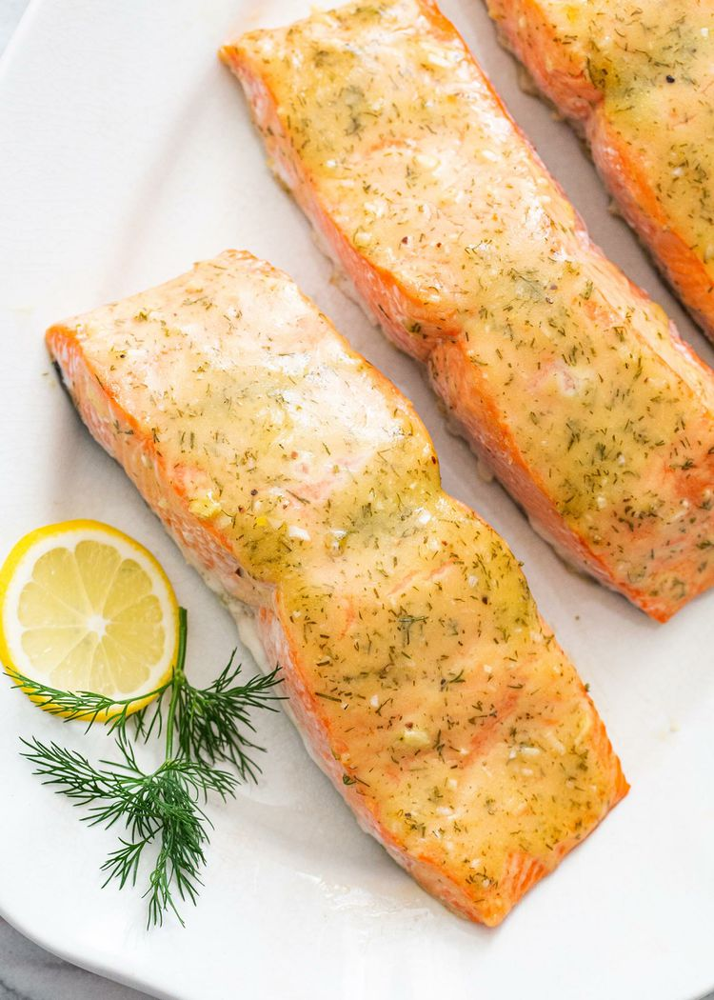

Honey Mustard Salmon

Description
This recipe is a simple, perfect for a weeknight!
Ingredients
- 1.5 - 2 lbs salmon fillets
- 3 tablespoons honey mustard
- 3 cloves of minced garlic
- 3 tbs extra virgin olive oil
- 1 tbs lemon juice
- 1 tbs chopped fresh dill
- pinch salt
Steps
- Preheat oven
- Whisk together honey mustard, garlic, olive oil, lemon juice, dill, and salt
- Prep salmon
- Bake